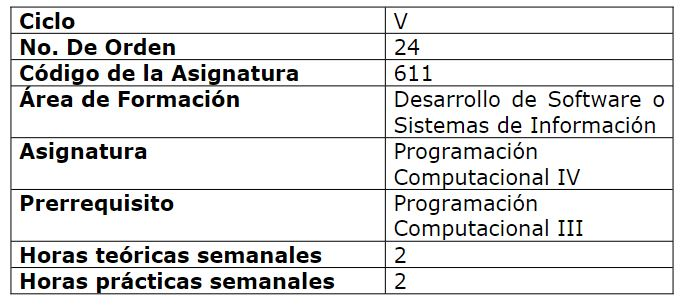
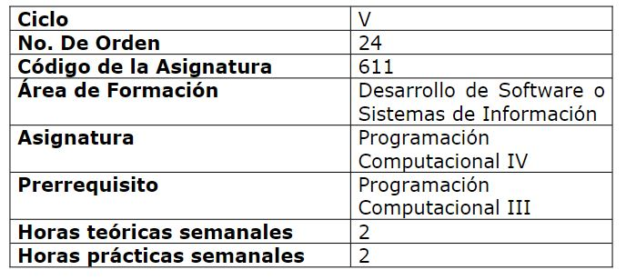
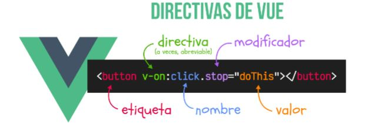
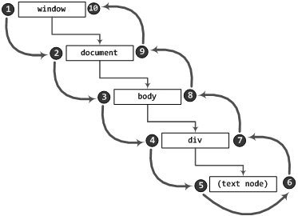
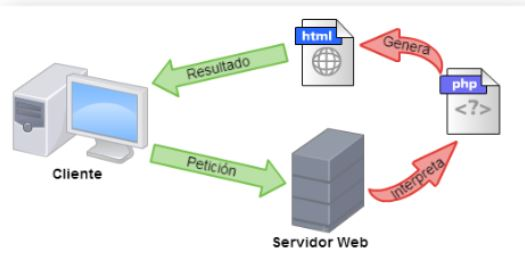

Este portafolio tiene como fin demostrar mi desempeño academico durante la asignatura de programación computacional IV. Dentro de este portafolio podemos encontrar diferentes trabajos realizados individualmente y en grupo, en cada uno de ellos encontraremos enseñanzas e ideas plasmadas en cada tarea realizada.
Descripción de la asignatura:
Los estudiantes comprenden y aplican los lenguajes y tecnologías para el desarrollo de aplicaciones para computadoras, dispositivos móviles; sin embargo, aún no conocen la integración de los elementos de desarrollo de sistemas para la Web que les permita crear soluciones profesionales en entornos distribuidos. Se pretende que, en la asignatura, los estudiantes adquieran las competencias para desarrollar programas orientados a entornos Web..UNIDAD I Desarrollo Frontend con librerías del lado del cliente.
1.1 Introducción a la librería Vue.js y Bootstrap.
1.2 Rendering Declarativo y Manipulación de DOM.
1.3 Sistema de Componentes.
UNIDAD II Desarrollo Backend con el Framework del lado del servidor y base de datos.
2.1 Introducción al desarrollo con PHP.
2.2 Instalación y configuración del servidor Web.
2.3 Introducción a Laravel.
2.4 Conectando a una BD MySQL con Laravel.
2.5 CRUD con Laravel.
2.6 Formularios con Laravel.
2.7 Sistemas de Rutas y controladores.
2.8 Validación de datos (rutas, vistas, formularios y controladores).
2.9 Blade: sistema de plantillas avanzado.
2.10 Trabajando con Laravel/UI.
UNIDAD III Incorporando tecnologías de Servidor Web
3.1 Introducción a Node.js
3.2 Instalación y configuración de Node.js
3.3 Asincronismo en Node.js
3.4 Módulos Nativos
3.5 Introducción a Express
3.6 Servicios de datos en Node.js con MongoDB
3.7 Aplicaciones Real-Time en Node.js con Socket.io
 



¡Hola a todos! Soy Gabriela Aguilar
Competencias de la asignatura:
Aplicar los lenguajes de programación y tecnologías para la Web con el propósito de utilizarlos en el desarrollo de aplicaciones basándose en estándares internacionales de desarrollo de software trabajando de forma individual y colaborativa.Objetivos personales:
* Comprender e interpretar los diferentes temas propuestos en clases.Competencias:
*capacidad para aplicar los conocimientos adquiridos en clases y prácticas.Unidad 1:
Desarrollo Front-end con librerías del lado del cliente
Laboratorio I:
Ver código:Laboratorio II componentes:
Ver código :Investigaciones:
Directivas:
Las directivas de Vue son atributos especiales que se colocan en las etiquetas HTML y están prefijados por v-, como por ejemplo, v-for, v-bind o v-on, entre muchas otras.
¿Que son los eventos?
En JavaScript, la interacción con el usuario se consigue mediante la captura de los eventos que éste produce. Un evento es una acción del usuario ante la cual puede realizarse algún proceso.
Componetes
Un componente en Vue.js es la forma de reutilizar una instancia de Vue tantas veces como sea necesario. Mediante los componentes se pueden crear elementos propios html, cada uno con sus propiedades y métodos particulares que fácilmente se pueden reutilizar en toda la aplicación.

Unidad II
Desarrollo Back End con el Framework del lado del servidor y base de datos.
Laboratorio I Crud Laravel
Ver código:Laboratorio II Validación de datos
Ver código:Practicas
Ver código:Investigaciones:
¿Que es PHP
es un lenguaje de programación de código abiertoEs la expresión con la que se conoce al software o programas que se pueden usar libremente.
¿Que es laravel?
Laravel es un Framework con una sintaxis elegante y expresiva. Un Framework proporciona una estructura y un punto de partida para crear aplicaciones.

Unidad III
Incorporando tecnologías de Servidor Web.
Laboratorio I Asincronismo con Node.js
Ver código:Modulo.js
Ver código:Laboratorio II Nodejs y MongoDB
Ver código:Practicas
Ver código:Investigaciones:
¿Que es PHP
es un lenguaje de programación de código abiertoEs la expresión con la que se conoce al software o programas que se pueden usar libremente.
¿Que es laravel?
Laravel es un Framework con una sintaxis elegante y expresiva. Un Framework proporciona una estructura y un punto de partida para crear aplicaciones.
Este portafolio como estudiante y futura profecional :) puede aportar la gran importancia que tiene este tipo de modulo dentro de nuestra carrera,
ya que aporta muchos temas importantes y los cuales usaremos como herramienta a utilizar en nuestro diario vivir como profesional en esa área.
El tomar esta herramienta de la realización de un portafolio virtual de aprendizajes hace que se tome nota de todos los aprendizajes y experiencias realizada,
además de la oportunidad de retroalimentar posibles aspectos que quedaron pendientes.